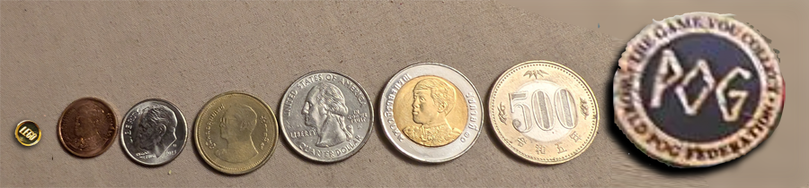
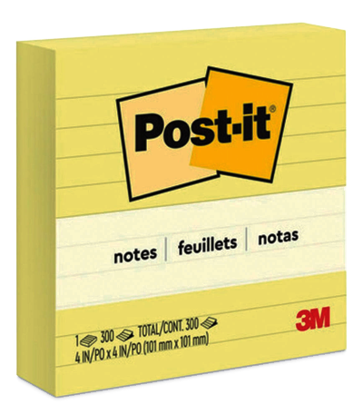
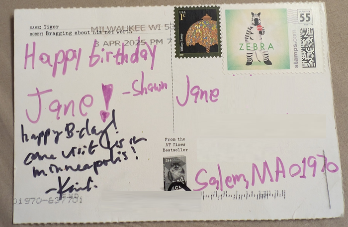
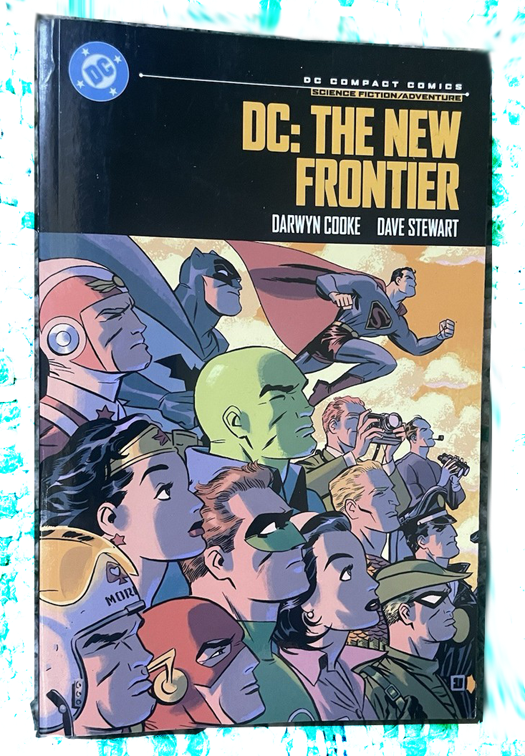
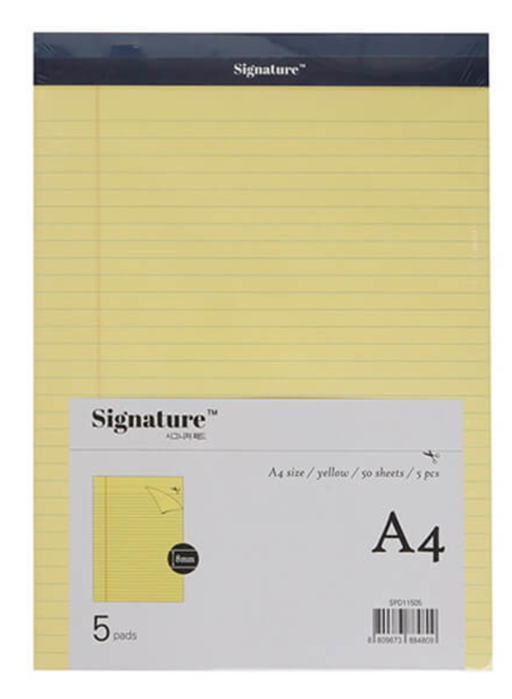
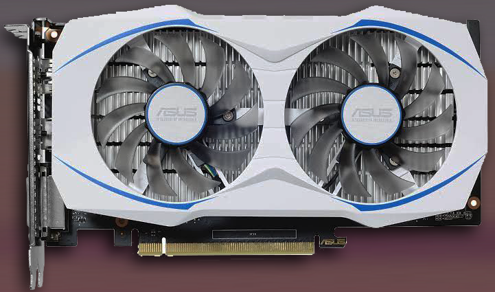
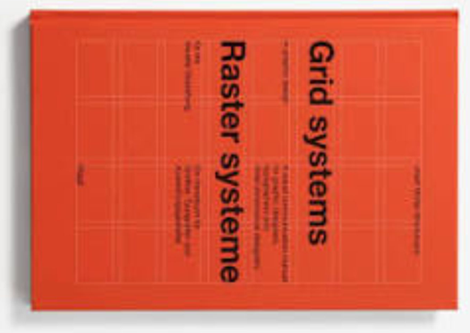

I've spent my entire tech journey living,
building, and loving in the gap between
designers & engineers.
With breakpoint-system, I hope to turn
that love into a bridge where both worlds
create without friction.
Wide open CSS-only API
@propjockey/breakpoint-system
Customizable breakpoints.
Custom-aliased queries.
Effortless, optional, fluid design engine built in.
No builds, no JS, no sweat.
Install & Import:
npm install @propjockey/breakpoint-system
Then import node_modules/@propjockey/breakpoint-system/breakpoint-system.css into your project.
OR
Use your favorite NPM CDN and include it on your page for small projects: <link rel="stylesheet" type="text/css" href="https://unpkg.com/@propjockey/breakpoint-system@1.1.1/breakpoint-system.css">
The biggest accessibility problem with media queries is solved in the background.
Breakpoints defined as pixel values for ease of DX are automatically executed as root em values for the relief of UX. This silently, cleanly, solves the far too often overlooked accessibility problems with user system font-size adjustments. The end experience is: users with a larger system font-size trip your mobile-first breakpoints proportionately later.
When using our fluid breakpoint unit, this guarantees magnification at least as much as their font-size change. Automatically - and without introducing any layout jank or overflow. 🧙♀️
REM Config
There are only two settings on :root, both are optional. To support the automatic translation of your pixel breakpoints into the accessibility-shifted root em values, we safely assume 1rem = 16px as a default. If you don't change your root font size, there's nothing you need to do here. If you do modify your font size on :root, you must forward that modification into the breakpoint-system engine.
The value of --bp-rem-adjusted is the percentage you're applying to your root font-size as a raw number, without the %. The default value is 100. Knowing your intended basis allows the engine to delta for the user's system font-size magnification scale, and shift the breakpoints to accommodate.
By default, we only shift the breakpoints if the user's font size is bigger than your basis. This helps prevent 3rd party fixed-width content (most ads) from winding up in containers smaller than expected. The options for this setting are resolved scalar variables provided by breakpoint-system.
:root {
/* default, bigger scaling */
--bp-user-em: var(--bp-bigger-scaling-opt-in);
/* option, allow all scaling */
--bp-user-em: var(--bp-full-scaling-opt-in);
/* opt-out of all user system font size scaling */
--bp-user-em: var(--bp-scaling-opt-out);
}
--bp-user-em can also be configured individually on each breakpoint-system element if needed. This is very useful if you have a contract to deliver fixed-sized content such as (non-flexible) ad units. In that case, bigger scaling opt in as the global default is great, and on the individual ad unit component, set it to opt out. The walkthrough later in the documentation quietly demonstrates this.
Tests
TODO
89% Global User Reach
Hit the metal at 89% reach with calc() only switches and space toggles.
Take it modern and use nested @container style() queries for 74%.*
Or rise to the bleeding edge with if(style()) queries for 66% global user reach.
* 88% according to caniuse, but Safari's implementation isn't ready for production so we've subtracted that 14% and use fallbacks for their impressive user reach all the way back to May 2023!
Full Browser Breakdown
(⚠️ spoilers inside!)
TODO
Stages and Nodes
Your main page or full-axis section layouts are the stages, your components are the nodes.
Classes, customization, and queries
All of @propjockey/breakpoint-system is in 3 classes.
.breakpoint-system
The full library functionality, without any default breakpoints or aliases defined.
You can use display: contents; on any of the 3 breakpoint-system elements, if you wish.
.bp-stage
The full library functionality, with default breakpoints and aliases defined.
This initializes your traditional idea of what responsive media queries do.
Intended to respond to the full width of the page for your main app layouts.
In the most basic use case, you place this class on your <body> tag and you're ready to query.
.bp-node
The full library functionality, with different default breakpoints and aliases defined.
This initializes a set of element-width based breakpoints that individual components would respond to.
By default the queries measure these breakpoints against 100cqw.
You would place the ".bp-node" on every component's root element.
Extensible (v1.1.0)
These class names are loose .my-config--breakpoint-system extends .breakpoint-system.
As an author, this allows you to SEE the dependency of your customized class name.
Optional, but helps ensure you never use one without the other.
(Authors only extend with prefixes-- 🤝 we'll only extend with -suffixes)
--bp-query-on: <length>
Set --bp-query-on to a <length> such as 500px, 100cqw, or 50vw to specify what the breakpoints are breaking against. This defaults to 100cqw, which is the same as 100vw when outside of a container. You typically won't set this for stages - nor for nodes placed at full width inside of a (inline-)size container.
The core architecture of @propjockey/breakpoint-system provides an enormous advantage: 100cqw does not include the scrollbar size. You are querying against the actual space your designs have to work in.
To embrace this win, we enthusiastically suggest adding the following CSS enhancement to your page, especially if you're using .bp-stage on body:
:root {
container-type: inline-size;
width: 100%;
/* plus these if they're not
// already in your reset. */
box-sizing: border-box;
margin: 0;
}
Defining your own breakpoints
You can define as many breakpoint sets as you want. However, for consistency, we recommend using only one site-wide set for the widths of your stages, and one separate set for the widths of your nodes. Then add the breakpoint-system class to your element along with the class defining your chosen breakpoints, my-webapp-breakpoints. (our default sets already mix-in the breakpoint-system class instead of it being separate.)
Optionally, you can extend .breakpoint-system with a prefix to make the dependency obvious. .my-webapp-breakpoints--breakpoint-system will include the functionality of .breakpoint-system plus your configuration. (We reserve -suffixes for future expansions; Your prefixed expansion can then easily opt-in to our suffixed expansions. 🧑💻🤝👽)
You can specify up to 10 breakpoints per set. These variables take <number> values representing the pixel size of the breakpoint.
Set the value to 0 to omit it from the end of the set, otherwise define the values in order from smallest to largest. You should also provide a default --bp-fluidity that omits the 0 breakpoints.
Querying and query aliases
Each of the 9 breakpoints has 3 built-in queries.
query greater-than-or-equal-to (qgte)
query less-than (qlt)
query in (qin)
To be "in" a specific breakpoint, the container must be between that breakpoint's value and the next one up. For example, to be "in" breakpoint 3, you must be gte index 3 and lt index 4. You are "in" the smallest breakpoint if you are simply lt the second smallest one.
The built-in query vars are used as "<integer>" bit-flags for true or false. They do not inherit so you should almost always alias them or use the default sets which come pre-aliased (aliased queries DO inherit). Not only are aliases good for ease of readability, but calc() and if(style()) queries running on child elements need to inherit the flags.
The query "in" results are aware of skipped breakpoints (excluded from --bp-fluidity) and behave as you would hope. (if you are in the md range but md is currently excluded, --qin-sm is still 1.)
⚠️ For consistency and clarity of your code, the query flags for breakpoints you've omitted from --bp-fluidity or set to 0 should not be used and especially not used inverted (1 minus the query flag). Their results like the breakpoint itself should be considered undefined, even though they are typically all 0 in those cases. Space Toggle query variants may not follow the same rules for undefined breakpoint variables and should also be avoided.
@container style() queries
⚠️ container style() queries cannot read variables set on the element itself. If your element has
class="
breakpoint-system
my-webapp-breakpoints
home-page-layout-instance
"
you will only be able to conditionally style things inside of it. This CSS limitation does not apply to calc() switches and if(style()) queries.
📝 Don't forget to specify the : 1 inisde the query. ctrl+f: troubleshooting
body.home-page-layout-instance {
color: blue; /* can't change with queries */
main {
@container style(--lt-small: 1) {
/* unreachable if it's always aliasing the smallest breakpoint */
}
@container style(--gte-small: 1) {
color: black;
--var: same as not being in a query because everything is gte your smallest bp;
}
@container style(--gte-swole: 1) {
--var: won't apply to small;
}
}
}
⚠️ Safari's implementation often does not work under slight load. Queued @container style query updates don't prevent the current frame from "finishing" the render before they've been flushed. Often the previous frame will render instead, which leads to crashes if the previous frame's deallocated memory is volatile (like during animations).
@supports (background: paint(for-chromium))
and (animation-composition: add) {
/* Chrome 112+ only.
// (111 +1 because Opera 97 used 111 but was still behind a flag)
*/
}
You can use this supports query to write @container style() queries safely. And not (...) it for your fallbacks.
if(style()) queries
if(style()) loses the ability to style multiple properties at once but gains the ability to query on the component itself. The one gotcha is short-circuiting means you have to do mobile last if you're using qgte because the first one true blocks the rest. You could use qin and qlt to keep them listed mobile first though.
:root.home-page-layout-instance {
color: if(
style(--gte-swole: 1): #FF00C7;
else: blue;
);
body {
color: if(
style(--gte-small: 1): black;
else: red; /* unreachable */
);
--var: if(
style(--gte-swole: 1): won't apply to small;
style(--gte-small: 1): has to come second, first one truthy short-circuits;
style(--gte-anything: 1): unreachable because gte the smallest is always true;
);
}
}
calc() switches
calc() also loses the ability to style multiple properties at once (unless you're setting a negative delay index to a paused animation that sets multiple properties in each keyframe) but like if(style()), it also gains the ability to query on the component itself.
Seven modern breakpoints backed by usage statistics and standard design tool presets.
Industry standard t-shirt size aliases for familiarity of DX and ease of typing.
Stage Default Breakpoints and Aliases
:where(.bp-stage) {
--bp-0-at: 375;
/* just over 10% of mobile phones are 360 width, < 2% are smaller than that */
--qgte-xxs: var(--bp-qgte-0);
--qlt-xxs: var(--bp-qlt-0);
--qin-xxs: var(--bp-qin-0);
--fluid-xxs: var(--bp-fluid-0);
/* the --fluid-* vars are aliased for use in --bp-fluidity */
--bp-1-at: 480;
--qgte-xs: var(--bp-qgte-1);
--qlt-xs: var(--bp-qlt-1);
--qin-xs: var(--bp-qin-1);
--fluid-xs: var(--bp-fluid-1);
--bp-2-at: 768;
--qgte-sm: var(--bp-qgte-2);
--qlt-sm: var(--bp-qlt-2);
--qin-sm: var(--bp-qin-2);
--fluid-sm: var(--bp-fluid-2);
--bp-3-at: 1024;
--qgte-md: var(--bp-qgte-3);
--qlt-md: var(--bp-qlt-3);
--qin-md: var(--bp-qin-3);
--fluid-md: var(--bp-fluid-3);
--bp-4-at: 1280;
--qgte-lg: var(--bp-qgte-4);
--qlt-lg: var(--bp-qlt-4);
--qin-lg: var(--bp-qin-4);
--fluid-lg: var(--bp-fluid-4);
--bp-5-at: 1440;
--qgte-xl: var(--bp-qgte-5);
--qlt-xl: var(--bp-qlt-5);
--qin-xl: var(--bp-qin-5);
--fluid-xl: var(--bp-fluid-5);
--bp-6-at: 1920;
--qgte-xxl: var(--bp-qgte-6);
--qlt-xxl: var(--bp-qlt-6);
--qin-xxl: var(--bp-qin-6);
--fluid-xxl: var(--bp-fluid-6);
/* default fluidity for all bp-stage elements, omitting the last 3 "0" breakpoints */
--bp-fluidity: var(--bp-fluid-0) var(--bp-fluid-1) var(--bp-fluid-2) var(--bp-fluid-3)
var(--bp-fluid-4) var(--bp-fluid-5) var(--bp-fluid-6);
--bp-7-at: 0;
--bp-8-at: 0;
--bp-9-at: 0;
}
Why these specific values?
Choosing breakpoint values is always a balancing act between global hardware statistics, popular CSS frameworks, and the default frame sizes in design tools. We ultimately chose these 7 because, while backed by those statistics, they mark widths where designs have the room to change in very specific and common ways.
375px (xxs)
The baseline. While about 10% of global mobile traffic sits at 360px (many Android devices), 375px is the default "iPhone" frame in Figma and Sketch. By starting the fluid scaling here, designs map 1:1 perfectly with the most common design tool defaults. Those 360px devices will scale down fluidly - without breaking the layout.
~12% of the global userbase is slightly less than this, about 30% is more than this without crossing into the next breakpoint.
480px (xs)
Breathing room. This is the historic upper boundary for mobile phones. Crossing this line usually means minor spatial changes, and for --bpu-* a chance to reset to the baseline sizing, which happens automatically. Designers do not typically squish two columns here yet but instead introduce larger margins, gutters, and optimize typography.
~3% of global users.
768px (sm)
Columns.768px is where the screen becomes large enough to support tight multi-column designs. This is the classic iPad in portrait mode. Almost every major UI framework (like Tailwind and Bootstrap) still uses this as the point for introducing collapsible sidebars, complex grid layouts, and some expanded navigation.
~5% of global users.
1024px (md)
Desktop transition. Crossing 1024px provides enough horizontal real estate to default to un-collapse sidebars, reveal full top-level navigation, and support dense three-column (or comfortable two-column) layouts. It matches the classic iPad in landscape and remains a common "small desktop" preset in every major design tool.
~4% of global users.
1280px (lg)
Deep breaths. Enough room for compact, complex application canvases. 720p displays and many smaller laptop viewports live here. Large data tables, heavy dashboards, and persistent panels can be safely unpacked. Matches Tailwind's xl breakpoint.
~13% of global users.
1440px (xl)
The modern desktop. If you open Figma and click the standard "Desktop" frame, it drops a 1440px artboard. Modern web design mapping perfectly to many modern laptop viewports (including standard MacBook scaling) and mid-sized monitors. Design with pixels and it's ready for handoff.
~10% of global users.
1920px (xxl)
Full HD. Standard 1080p monitors. This is the upper boundary where you usually have already stopped scaling up UI elements and instead started designing with max-widths and margin gutters to keep text line-lengths readable and minimize mouse-travel-distance. Specialized tooling, gaming, and huge collections of data widgets and tickers are among the rare to use it all.
~23% of global users.
Tests
TODO
Even better default breakpoints for nodes
Ten heavily researched component level breakpoints, rooted in the present, across long standing patterns of several industries and their deep IAB influence. Delivered with an unbeatable, intuition-enhancing alias-matrix that will outlast and outshine industry standards of the stage level t-shirt breakpoints.
Node Default Breakpoints and Aliases
One of the challenges with industry-standard t-shirt sizing used for breakpoint names on the stage is that you have to use them repeatedly to build an intuitive feeling for their actual width. However, familiarization with one size strengthens the adjacent ones because t-shirt sizes are a commonly understood, ordered progression.
In order to normalize individual node (component) breakpoints in your design practice, I needed to minimize the barrier to adoption. That meant:
Making the names easy to memorize.
Establishing unique names distinct from t-shirt sizing alone.
Ensuring the names are common enough that intuitive familiarity already exists.
Ensuring the names are relatively progressive in widthaccording to that intuition.
Shortcutting the width familiarization phase by anchoring each breakpoint name to a corresponding, real-world physical object - establishing that intuitive feeling for the available width early.
If you subscribe to the idea that naming things is the hardest part of computer science, then I appreciate your grace if the following reference table I built to accomplish #5 doesn't pass international or individual rigor like a standardized test question. 😶 However, I do believe the concept is practical for building intuitive awareness in how much width each breakpoint name represents.
The smallest breakpoint coin covers everything under 160. From a tiny LEGO coin to POG slammers:

note
card
page
small
sm-note
sm-card
sm-page
160 - 240px (1.67" - 2.50")
240 - 300px (2.50" - 3.13")
300 - 384px (3.13" - 4.00")
Ex: Torn "IOU" Scrap Note
Ex: Tarot Card
Ex: Passport
medium
md-note
md-card
md-page
384 - 468px (4.00" - 4.88")
468 - 600px (4.88" - 6.25")
600 - 728px (6.25" - 7.58")
Ex: 4" Square Post-it
Ex: Standard Postcard
Ex: Comic Book



large
lg-note
lg-card
lg-page
728 - 800px (7.58" - 8.33")
800 - 970px (8.33" - 10.10")
970+ (10.10"+)
Ex: A4 Lined Notepad
Ex: Dual-Fan Graphics Card
Ex: Sideways Grid Systems Book



For your own breakpoint values or to teach our defaults from your perspective, providing your own references in a similar breakdown could be of great benefit to those on your team and/or to the wider audience who shares your perspectives.
Here's the full CSS for these default values and aliases if you'd like to make your own variant. The same rules from stage for the smallest breakpoint still (always) apply: It doesn't break at the smallest position defined and instead it only defines the --bup-16px = 16px point within the range of 0 to the next breakpoint position.
Just like the stage breakpoints, their positions are only useful because they represent widths where the most common layout shifts occur. Unlike stage breakpoints that vary primarily as a response to broad strokes of any boxed content, node breakpoint usage varies primarily based on specifically what their content is - and at finer scales.
Because of that, it is much less likely to have designs at each breakpoint. Which means it is much more likely for you to use --bp-fluidity and opt-in to specific breakpoints from the full set on each node.
So why define a common set at all? When a set of components are placed in the same-width flexible container, they are more likely to all "break" into their new layout at the same time. At the broadest level, these node breakpoints correspond to the most common column sizes embedded in the most likely layouts designed for each of the stage breakpoints. Historically, standard IAB ad sizes are the source of most common layout column widths across the web. Their influence is so pervasive that even sites who never touched an ad adopted similar layout divisions.
120px (coin)
From 0px to 160px, baselined --bpu-1px = 1px at 120px. This is the absolute minimum space for interactive UI. Under 160px, a component is usually just a large avatar, a badge, or a tightly packed icon group. Text here is severely limited, often requiring truncation or switching to icon-only layouts.
A responsive example component could be a small status indicator light about the size of a golden Lego coin, that when placed somewhere larger would have text, larger still a simple status-history chart, larger still with details on the chart, and so-on until the same component is a full data table and mini-dashboard.
160px (sm-note)
Historically the "wide skyscraper" ad width, 160px is the standard dimension for tight sidebar widgets, vertical navigation trees, and complex tooltips. It provides just enough room for a single, short word per line.
240px (sm-card)
A common width for dense product grid items on mobile. At 240px, a component finally has enough room to comfortably stack a thumbnail image above a multi-line title and a button.
300px (sm-page)
Rooted in the 300x250 "Medium Rectangle" standard ad that influenced nearly every layout. This is the minimum comfortable width for a standalone block of text, a standard dropdown menu, or a popover. It is the baseline for readable paragraph text inside a constrained space.
384px (md-note)
Exactly 24rem (assuming a 16px base) - a great width for text content. Designers often use this dimension for comfortable reading asides, medium-sized feature cards, or sliding drawer panels.
468px (md-card)
Historically the "Full Banner" width. When a component reaches 468px, it is often too wide to keep its internal elements stacked vertically. This is the perfect breakpoint to switch a stacked card into a horizontal, small image-left/text-right layout.
600px (md-page)
600px is historically the standard width for HTML emails and the maximum comfortable line-length for long-form reading. If a text-heavy component grows past this, its internal text needs to be constrained or broken into columns.
728px (lg-note)
The "Leaderboard" width. At this size, a component is usually spanning the entire width of a main content column. It is ideal for horizontal list items, data-dense rows, and complex horizontal forms.
800px (lg-card)
When a component reaches 800px, it has the room to be multi-functional. This is the standard width for complex settings modals, large feature highlights, and large interactive data cards.
970px (lg-page)
Room to host the historical standard 960 and 970 grid systems. At 970px, the component is essentially a full page layout nested inside a larger system. It has enough room to run its own internal multi-column grid, completely independent of the stage.
If a single component is much larger than this, it should use stage breakpoints instead.
Tests
TODO
Space Toggle Query Expansion (v1.1.0)
Opt in to add space-toggle variants for all of your query conditionals for an even better authoring experience. And no compromise on the base library's broad 89% global user reach! Full support!
It's not the promised land of the incredible future focused if(style()) API but it's the next best thing and probably the primary drive behind early and wide author demand of if(style())!
Space Toggle API
Add -st to the end of any of our 3 class names to opt-in to this feature.
Nothing is likely to come close to the awesome power of CSS's if(style()) for quite some time. But for broad browser compatibility without taking a hit to your user reach, if you've learnedaboutspacetoggles, it will make using breakpoint-system in today's world even more useful.
With our space toggle expansion, we've first cast the query "in" set of bits into corresponding Space Toggles and we add on default aliases to the .bp-stage-st and .bp-node-st classes for you.
--qin-md-note // 0
--qin-md-note-st // initial
--qin-md-note-ist // space
--qin-md-card // 1
--qin-md-card-st // space
--qin-md-card-ist // initial
A brief space toggle explainer
In CSS, initial acts as a sort of super powered undefined. If you include it next to another value:
--also-undefined: var(--i-am-initial) red;
the whole variable is treated as initial, like false && in javascript, and like 0 * in calc() switches (math). Then you can use var fallbacks to toggle to the opposite state:
color: var(--also-undefined, blue);
In contrast, the (space) value can be added to any property and it does nothing to the value like true && in javascript, and like 1 * in calc() switches (math). So you can use one space toggle var in several properties, and they'll all flip to their independently specified opposite states.
Since initial is objectively analogous to falsey, and space truthy, the default "qin" space toggle variants (--qin-xxs-st) are space if you are in that breakpoint range and initial if you are not in that breakpoint range.
However, in real-world use of space toggles, it is sometimes useful to have the inverted, NOT space toggle be the preference so I've also provided "inverted space toggles" (--qin-xxs-ist) for each breakpoint which are the opposite state: initial if you are in that breakpoint range and space if you are not in that breakpoint range. (It was computationally "free" to add them, and prior to if(style()) it's not trivial to NOT a Space Toggle).
Space Toggle variants of qgte and qlt are also included
Following the same aliasing pattern, --qgte-xl becomes --qgte-xl-st and the inverted set exists as well --qgte-xl-ist. It should be noted that --qgte-xl-ist is already an alias of --qlt-xl-st since they gte and lt are logically opposite and we inverted one of them.
Many CSS authors think of Space Toggles using the inverted variant as their standard perspective, so the alias is important for clarity of intention.
Aliasing built in Space Toggle vars
Like all the other query variables, these can be aliased for your own breakpoint sets however you see fit. This is the defaults for our stage and node breakpoint sets for reference:
The fallback implementation uses an always-paused animation
And we just invented a way to do it without animation tainting.
The default implementation is trivial using if(style()) to cast the bit into a space toggle and wrapped in the appropriate @supports statement. As of April 2026, global user reach for the primary implementation is 66%.
The remaining 25% of our current global reach is implemented with animations.
(There are no performance issues to worry about - they are hard-coded as paused and only ever recompute when the entire element is already recomputing because of a size change.)
Adding animations while opting into space toggles
When you opt-in to space toggles (.bp-node-st etc) and you want to also add an animation to the root of your component or layout, you'll be "unplugging" our fallback behavior.
To "plug-it-back-in", we've provided a corresponding variable for every possible animation property you might be setting. For example, using the excellent 🤌 animations from Open Props:
You do not add a comma after our parallel variable - our variable will have a trailing comma if we've set any animation for the current user. If the current user is in a browser that supports if(style()), our parallel variables will be a single space, which does nothing.
All 12 standard CSS animation properties have a 1:1 parallel variable from breakpoint system. So if you set any of them, or all of them, always put ours first, never put a comma after it, and you're golden!
If that is all the functionality you want, PropJockey's happy to deliver!
...but our tools are built to exceed expectations — and create new dreams.
The Breakpoint Unit
Using --bpu-* means:
No more clamp vw math, or rem decimals.
You design with pixels at your breakpoints.
You implement with the bpu equivalent.
You get flawless, fluid, automatic scaling breakpoint to breakpoint.
Frictionless designer to engineer handoffs.
Your users get all the benefits of the single most accessible breakpoint system ever created.
Considerably less effort than traditional implementations.
BPU Documentation
TODO - you can add a button to emulate mobile on any screensize for a11y
Most design systems are built with a highly standardized set of <length> values for their design tokens. For example, these are some of the most common value sets and corresponding tokens from popular design systems:
While this isn't comprehensive, the "skipped" values are a common pattern. Since @propjockey/breakpoint-system isn't a full on design system itself (but is very likely to be the basis of most design systems moving forward from its release), we wanted to simplify what's available for quick usage of --bpu-*. These --bpu values could be aliased into your unique design system tokens as needed.
Our structural breakpoint unit comes in two main sets: <number> (--bpu-1) and <length> (--bpu-1px).
All the follwoing bpu values are available in both sets.
--bpu-1--bpu-1px
Multiples of 5 up to and including 50.
All even numbers up to and including 50.
56, 64, 72, 80, 96, 128, 160, and 3 (mainly for focus rings)
You can calc() for any values outside of this, calc(var(--bpu-1) * -13px) or calc(var(--bpu-1px) * -13) for example.
We also included a one-off: --bpu-1rem and its numeric equivalent --bpu-1rem-n in case you wanted to spin off your own set or use it in specific scenarios.
Major Accessibility Win
The breakpoint unit and our automatic breakpoint position adjustment based on the user system font-size change work together in an amazing way. The most common font-size adjustment is 25% bigger than the default 16px.
When the font size is 25% bigger:
Breakpoints transform into 125% of their original value.
Breakpoint ranges extend their fluid bpu growth phase instead of tripping into the next design.
bpu values start at 25% magnification when the new breakpoint location trips.
Elements at a width within the first 25% of the breakpoint range will render the previous breakpoint design instead.
Elements beyond the first 25% of the breakpoint range will begin showing the same current breakpoint at a minimum of 25% magnification.
There is absolutely no layout jank or overflowing content to worry about. We render what there is space for - the 25% magnification is already part of the experience for everyone viewing the page at that size, it's the first 25% that doesn't get shown (because we were showing the previous breakpoint design even larger than other users' experience). Your design, in pixels, implemented with the bpu equivalent, is exactly what is shown in all cases - just magnified like images when set to 100vw as you resize the window.
Automatically.
BPU Typography Docs
Our our typography breakpoint units come in two main sets of t-shirt sizes: <number> (--bpu-sm-n) and <length> (--bpu-sm).
The full range is xxs, xs, sm, md, lg, xl, xxl, xxxl sm is the 16px baseline, independent of your REM value.
--bpu-xxs
--bpu-xs
--bpu-sm
--bpu-md
--bpu-lg
--bpu-xl
--bpu-xxl
--bpu-xxxl
The typography breakpoint units differ in that they do not shrink when rendered in areas below your smallest breakpoint. They remain locked at their defined sizes until the available space is larger than the breakpoint, at which point they grow fluidly along with the rest of the breakpoint unit family.
Again only while in the smallest breakpoint range, they also differ in that the user's system font-size adjustment is proportionately applied directly to these units to guarantee the minimum target a11y text magnification. The structural bpu values do not directly apply the user scaling because, as a byproduct of their fluid growth and breakpoint shifting, they never render below the user's scaling in spaces larger than the smallest breakpoint; Producing that perfect non-overflowing zero-layout-jank accessibility magnification without directly using the scalar.
(we can't shift breakpoints to render below the smallest one, so in that smallest range for typography, that magnification has to be applied directly onto the unit)
The functionality of this typography unit exists in a 1-unit basis variable you can use to spin off your own sets.--bpu-typography-basis-n and/or --bpu-typography-basis
The default xxs, xs, and sm values are exactly 12, 14, and 16 times this basis.
Across all design sizes, your 3 smallest font-sizes should typically never change. While the larger scales should expand as space allows. 1.2 is a suitable step for smaller screens, for larger breakpoint ranges, wider steps are typical.
.bp-stage provides a default harmonic step-increase for these typography breakpoint units using a calc() switch on the default query aliases. This allows you to set the font-size of your body and hX tags to one of these units once without having to micro-manage the font-size at every breakpoint. It's built in to the unit itself.
.bp-node provides a very similar default harmonic step-increase for the typography breakpoint units. The default node increase follows .bp-stage closely. Because the largest node breakpoint is only 970 (bigger components like full page width heros should use bp-stage breakpoints) and stage's sm breakpoint is 768, all .bp-node breakpoints use 1.2 (Minor Third) as the componding scalar, except for the two biggest.lg-card (800) and lg-page (970) use 1.25; lg-note (728) remains at 1.2 with the rest.
BPU Typography for Design Tools
To ensure your static designs perfectly match our engine's stage defaults, implement these values using Variable Modes (Figma), or Token Sets (Tokens Studio/Penpot), etc. While the engine handles the fluidity between breakpoints, these hardcoded values are your baselines for each artboard size. The width of each artboard is the exact size of the corresponding stage or node breakpoint:
Create one variable collection named "Typography."
Create 5 Modes named after the columns in the table (e.g., "bp-stage xxs and xs", "bp-stage sm and md", etc.).
Create a copy of the first two Modes for node breakpoints, "bp-node coin to lg-note", "bp-node lg-card lg-page".
Map the Tokens: Create variables for --bpu-xxs through --bpu-xxxl.
When you move a design frame from the "bp-stage lg" mode to the "bp-stage xl" mode, all font sizes will update to the corresponding bpu specs.
W3C Design Token Format ( bpu-tokens.json )
You can import these as tokens into most design tools for a quick start.
The JSON keys below (stage-xxs-xs, etc) correspond to the default stage breakpoints. In your design tool (like Tokens Studio or Penpot), these will appear as your Token Sets. Toggle the set that matches the viewport range you are currently designing for. bpu-tokens.json
Click the Settings tab and look for the Load from File or Tools > Import section.
Paste the JSON content.
Note: The plugin will automatically detect the top-level keys (e.g., stage-xxs-xs, node-coin-to-lg-note) as Token Sets. You can click the checkboxes next to each set to "activate" that mode on your current artboard.
2. Penpot (Native Support)
In your Penpot file, open the Assets panel.
Look for the Design Tokens section.
Click the Import icon (or look for the "..." menu) and upload bpu-tokens.json.
Penpot will map these to your shared styles, allowing you to switch between the stage and node ranges globally.
3. Sketch (via Third-Party Plugins)
While Sketch does not yet support W3C's JSON natively, plugins like Lingo or Specify can use this JSON and sync it directly to your Layer and Text Styles.
Tests
Unit tests for BPU boundary math.
Walkthrough of bpu values as we traverse our stage breakpoints at various screen sizes and observe the accessibility effect of a user's system font-size adjustment.
--bp-query-on: 100cqw;
px
var(--bpu-16px)
px
Current breakpoint
px
var(--bpu-sm)
px
PropJockey breakpoint-system
The smallest breakpoint has no previous design to flip to with magnification. So within that smallest range, the typography breakpoint units (--bpu-sm) apply magnification directly to itself instead - and their values lock in as minimums instead of shrinking when the viewport scales below that smallest breakpoint. Structural breakpoint units (--bpu-16px) remain fluid in this range.
Constraints for design: max-width and aspect-ratio
Four input variables along the main query axis and a cross axis, --bpu-main-max, --bpu-aspect-ratio, --bpu-cross-basis, and --bpu-main-shrink-to define the available constraints you might design under. They are listed here in the order you will generally introduce them into your designs. They all work together to limit bpu values without compromising accessibility and help you deliver your designs.
Constraining Breakpoint Units
No matter what breakpoint you're designing for, you may want your design to stop scaling before the next breakpoint along your main axis (e.g. max-width along viewport width).
Like the breakpoint values, --bpu-main-max accepts a <number> of pixels that tells the bpu values to stop expanding for this stage or node even if the axis (computed --bp-query-on value) has more room. You design with pixels, define the max length (typically width) as numeric pixels, and the entire bpu system stops fluidly growing at that point in harmony without developers needing to cap each css property themselves. The default value is 0, which turns the feature off.
This cap also produces a <length> variable, var(--bpu-main-result). You can use it to set the width of the element itself, or you may be using display: contents;, doing something else specific, not even need the current capped width, or wanting to modify child elements.
var(--bpu-main-result-n) holds the equivalent pixel value as a <number> should you need it.
Maximizing aspect-ratio'd designs within your container.
Native CSS cannot do this without you jumping through trig and calc() hoops, so we've hidden the math and expanded the options using this family of 4 variables.
--bpu-aspect-ratio accepts an aspect ratio such as 16 / 9 or 4 / 3. The default value is 0, which turns the feature off.
When specified, var(--bpu-cross-result) holds the <length> of your cross axis - calculated from the current --bpu-main-result-n value. Use it to set the height - or anything else you need to do, and your design has filled the available space without overflowing or breaking your aspect ratio.
var(--bpu-cross-result-n) holds the equivalent pixel value as a <number> should you need it.
Aspect Ratio's Cross Basis
The computed value of --bp-query-on is the basis length for the main axis var(--bpu-main-result).
The computed value of the length you specify for --bpu-cross-basis (defaulting to 100cqh (which is often 100vh)) also caps var(--bpu-main-result) assuming --bpu-aspect-ratio is specified.
A 16 / 9 design on a phone in landscape mode will most likely be a very small thumbnail instead of taking the full width because the available height has been eaten by system UI. In this scenario, var(--bpu-cross-result) would often be equal to the cross basis length (typically equal to 100vh).
Growing beyond the cross basis
Specifically to prevent the cross basis from shrinking --bpu-main-result too far from the main basis, designers using an aspect ratio can also specify --bpu-main-shrink-to with a <number> equal to the design's minimum pixel value just like --bpu-main-max is the maximum.
--bpu-main-shrink-to does not grow var(--bpu-main-result) past the main (query-on) basis. It only prevents the cross-basis from shrinking the main axis too far and consequently pushes the cross axis beyond its basis. So the 16 / 9 design on your phone in landscape mode becomes taller than the screen and fills more of the available width. The default value is the current lower-bound breakpoint so it doesn't shrink your bpu values (including typography) below the target design. Setting it to 0 effectively turns the feature off.
Tests
TODO
Walkthrough of bpu values as we apply constraints to the design.
Fluidity drives configuration reuse, informs bpu scaling behavior, and acts as inline documentation.
Your stage and node configurations provide project-wide consistency if you aren't using one-offs, but not every layout or component requires a unique design at each of their respective breakpoints. The --bp-fluidity property documents which breakpoints an element is designed for, resetting bpu values from their continuous scaling back to their baseline only at each one included.
Fluidity Documentation
Your stage and node breakpoint configurations include aliasing a "fluid" property for each breakpoint. Our stage and node defaults are the following:
You design with pixels with each artboard/canvas/frame set to the same size as your breakpoints. You may not always have a design for each breakpoint - especialy with nodes (components).
When you've settled on a set of designs for a specific stage or node, handoff to the developer the corresponding list of named breakpoints you're delivering.
Developers will use a breakpoint-system element at the root of the new layout/component (by adding one of our 3 class names to it) and on this element, specify --bp-fluidity using the corresponding fluid alias for those breakpoint names the designer deliverd.
--bp-fluidity documents what designs are specified. For any breakpoints omitted, the bpu values will not reset to their baseline size at those locations and will instead continue expanding until the next included breakpoint is reached.
The collection of queries for omitted breakpoints will always return 0. The only behavior change for queries of included breakpoints is: --qin-* is aware that if your viewport is in medium range but medium is omitted, you are "in" the small range instead, which expands all the way to just before "lg" if large is included.
The default --bp-fluidity value is var(--bp-fluid-all). .bp-stage defaults it to the first 7 fluid vars (0 to 6), corresponding to the breakpoints in that set.
Tests
TODO
breakpoint-system elements are nestable, stackable, and individually configurable.
Query against any length with any breakpoints - view width or height, element width or height, scroll position breakpoints, arbitrary progress-based lengths, mins and maxes and any combo calc() of the previous. Anything. Alias what you need later and inherit it all further down the dom - and even into the shadows if you wish.
Nesting Documentation
Changing --bp-query-on to a height-based value like 100vh sets up your breakpoints to respond to that axis. Configure your own breakpoint positions, and alias the queries specifically for height. Nested directly inside of that, use our default bp-stage breakpoints against width. Assuming your aliases don't overlap, you can now set properties for any nested dom elements using either or both your height based breakpoint queries and your width based breakpoint queries.
You aren't limited to one instance of a set. If your full stage layout has multiple sibling sections, each one could have its own stage layout. It's not uncommon for the page header to be handled as a stage rather than a node when it spans the whole screen on all designs, for example. And of course, like stage, components using node breakpoints can be nested, stacked, or placed anywhere.
If a parent breakpoint-system element needs to use its bpu values to set properties on descendant breakpoint-system elements, the values should be var'd on the parent, otherwise they would compute using the bpu values of the child if set directly.
Rather than prepping layout-controlled properties like margin, gaps, and sometimes width on every individual stage layout, a full design system using breakpoint-system as a foundation would most likely already set up these tokenized values as a direct extention of the .bp-stage class itself (or directly on the class used for configuring their own custom stage breakpoints). That way var(--content-margins) would be available on all nodes nested in any stage, using the stage bpu values.
Tests
TODO
Deliver Your Designs.
Emulation for your marketing, documentation, and style guides
Specify a target size and any breakpoint-system element will scale its bpu and breakpoints down to render the entire element inside its constraints as if it were at the specified size.
Emulation Docs
--bp-emulate accepts a number representing the pixel width of the viewport size you want to render this element at. It renders at that size and scales down to fit into the actual space it has available (as defined by --bp-query-on). User system font size adjustments DO NOT apply within an emulated element projection.
If the --bp-emulate number you provide is less than 10, it will instead index your list of breakpoints and emulate at the corresponding size. If emulation is a feature you use often, in your config or as an extention of .bp-stage or .bp-node, you could alias the indexes in vars named after your breakpoints themselves and use those vars here: --sm: 2; then --bp-emulate: var(--sm);
It is possible, with only a few lines of code, to provide buttons that allow your user to flip your site to the previous breakpoint(s), magnified to fit their screen, using this feature.
The default, disabled value for --bp-emulate is -1.
Additionally, --bp-emulate-rem takes a number representing the pixel size of the user system font-size (e.g. 20) if you also want to also emulate that behavior only while using --bp-emulate. Useful if you'd like to document or test the behavior of your breakpoint designs, especially the smallest one.
Tests
TODO
Concepts, cheatsheet, and more!
These are the variable namespaces @propjockey/breakpoint-system steps on.
--bp-.+ // config and basic use
--bpu-.+ // Breakpoint Unit features
--_bp-.+ // internal use only
// Default query alias namespaces
// only if you use .bp-stage for our default full-frame breakpoints:
--qgte-(xxs|xs|sm|md|lg|xl|xxl)
--qlt-(xxs|xs|sm|md|lg|xl|xxl)
--qin-(xxs|xs|sm|md|lg|xl|xxl)
--fluid-(xxs|xs|sm|md|lg|xl|xxl)
// only if you use .bp-node for our default component breakpoints:
--qgte-(sm|md|lg)-(note|card|page)
--qlt-(sm|md|lg)-(note|card|page)
--qin-(sm|md|lg)-(note|card|page)
--fluid-(sm|md|lg)-(note|card|page)
The core constraint
Our core constraint is: @propjockey/breakpoint-system elements must either be told the <length> of the axis to query against, or they assume 100cqw by default.
On :root, you won't notice the constraint; It behaves exactly like a traditional media query. However, we enthusiastically suggest placing your stage breakpoints on body (body.bp-stage) with the following CSS on :root
:root {
container-type: inline-size;
width: 100%;
/* plus these if they're not
// already in your reset. */
box-sizing: border-box;
margin: 0;
}
This has the huge win of excluding the user's system size of their scrollbar gutters so your queries run against the actually available space no matter their accessibility settings or system defaults.
With this brief one-time setup, you again won't notice the constraint.
Full page width querying is the most widely expected use case for @propjockey/breakpoint-system and our restrictive axiom is effectively invisible.
We also champion compnent level breakpoints though and the native CSS (CaveatSandStorm) logic begins to branch if you can't immediately resolve the restirctive axiom.
Like :root (or body) assuming it is the same size as the full available width (100cqw/100vw),
by default, a node (component) assumes they are:
already inside of a container (like the viewport itself)
and that the container has a container-type (typically inline-size) supplying the value for the axis it's querying against (100cqw)
and that this node itself takes up 100% of that axis (like :root typically does)
If your grid or layout system already knows the <length> of the component, or you are comfortable allowing JS to provide that information to CSS, you can set --bp-query-on to that length without any extra dom nesting and without using CSS containers, resolving the restrictive axiom.
Layouts can also define bpu based widths for its "slots" and skip the container - which will be easy and common once your stack is fully invested in breakpoint-system since you'll simply be designing everything with pixels.
If you cannot do any of the above because the breakpoint-system element is not in a container and has a width set with a percentage or by an otherwise unknown <length>, you can either:
add container-type: inline-size; to that element and then use display: contents; on the root of your breakpoint-system element nested inside of it to meet the requiremnt
OR
You can use our auto measure feature on your breakpoint-system element.
The CSS-only auto measure feature measures the size of your breakpoint-system element and automatically sets the --bp-query-on property with the corresponding length (typically width). It also sets the default --bpu-cross-basis property with the (typically height) length if you use aspect ratio. With the following costs:
1) a ~5% hit in global user reach because it uses an effectively-finished/0-frame animation tied to a view-timeline to measure it.
2) All responsive vars belonging to that breakpoint-system element are animation tainted so they cannot currently be used to trigger other animations outside of using @container style() to read the tainted value and change an animation on descendants.
3) The "result" vars from aspect ratio and max width features can't be used to set its own width or height and must only be used on children otherwise you softlock the breakpoint-system element to its initial size.
Using Auto Measure
Auto measure consumes one of your element's pseudo elements (or a delegate) to make the measurement with view-timeline. By default it assumes your main axis is the width.
Set --bp-auto-measure: var(--bp-am-before); to use your before pseudo element and automatically set --bp-query-on to the <length> width of your element.
Set --bp-auto-measure: var(--bp-am-after); to use your after pseudo element and automatically set --bp-query-on to the <length> width of your element.
Set --bp-auto-measure: var(--bp-am-delegate); to use an empty direct descendant of your element with the class bp-measurement-delegate to automatically set --bp-query-on to the <length> width of your element.
To flip the main axis to height instead of the default width, also include var(--bp-am-height) in the property value
⚠️ If only height is chosen, everything comes alive except the actual measuring device.
When it sets --bp-query-on using width, it also sets the default value for --bpu-cross-basis using height.
When it sets --bp-query-on using height, it also sets the default value for --bpu-cross-basis using width.
(--bpu-cross-basis doesn't do anything unless you're using aspect ratio.)
API Reference / Cheatsheet
Class names
breakpoint-system full library without default breakpoint config bp-stage full library with full page width (stage) default breakpoint config bp-node full library with individual component width (node) default breakpoint config
:root REM settings
--bp-rem-adjusted: <number>;
Optional | Default: 100 | Common: 62.5
Your own definition of the root font-size percentage, provided as a number. Typically only for integrating with existing projects. Do not set your root font size for new breakpoint-system projects, use bpu instead. Docs
Defining breakpoint locations for your own preset.
Optional | Default: 0
Pixel based number value of your breakpoint locations. --bp-0-at: <number>; --bp-1-at: <number>; --bp-2-at: <number>; --bp-3-at: <number>; --bp-4-at: <number>; --bp-5-at: <number>; --bp-6-at: <number>; --bp-7-at: <number>; --bp-8-at: <number>; --bp-9-at: <number>; Docs
Built in queries you alias when making your own preset.
qgte = query greater-than or equal to the breakpoint
qlt = query less than the breakpoint
qin = query "in" the breakpoint's range var(--bp-qgte-0)var(--bp-qlt-0)var(--bp-qin-0) var(--bp-qgte-1)var(--bp-qlt-1)var(--bp-qin-1) var(--bp-qgte-2)var(--bp-qlt-2)var(--bp-qin-2) var(--bp-qgte-3)var(--bp-qlt-3)var(--bp-qin-3) var(--bp-qgte-4)var(--bp-qlt-4)var(--bp-qin-4) var(--bp-qgte-5)var(--bp-qlt-5)var(--bp-qin-5) var(--bp-qgte-6)var(--bp-qlt-6)var(--bp-qin-6) var(--bp-qgte-7)var(--bp-qlt-7)var(--bp-qin-7) var(--bp-qgte-8)var(--bp-qlt-8)var(--bp-qin-8) var(--bp-qgte-9)var(--bp-qlt-9)var(--bp-qin-9) Docs
Default --bp-fluidity values you alias when making your own preset
var(--bp-fluid-0)var(--bp-fluid-1)var(--bp-fluid-2)var(--bp-fluid-3) var(--bp-fluid-4)var(--bp-fluid-5)var(--bp-fluid-6) var(--bp-fluid-7)var(--bp-fluid-8)var(--bp-fluid-9)
The aliases of these vars are used to set --bp-fluidity to define what breakpoints a layout or component was designed at. Docs
Typography scaling
--bpu-typography-scalar: <number>;
Optional | Default: 1.2 (Minor Third)
By default, doesn't apply to xxs, xs, or sm typography sizes. Compunding step increase for the rest. Docs
--bp-query-on: <length>; Default 100cqw
A flexible length to query against. Should be "live" with the current space a layout or component (stage or node) has available to it. Should typically not be a fixed length like pixels unless it is managed with javascript. Docs
Emulation
--bp-emulate: <number>;
Optional | Default: -1 (disabled)
Target width in pixels as a number to render the element at, shrunk to fit in its current main axis. Docs
--bp-emulate-rem: <number>;
Optional | Default: 16
Only when using --bp-emulate specifies a user system font size (e.g. 20) to emulate within the design. Docs
BPU Constraints - designing with max width and aspect ratios
--bpu-main-max: <number>;
Optional | Default: 0 (disabled)
Pixel based number value for where this design should stop all bpu values from expanding further. Docs
--bpu-main-shrink-to: <number>;
Optional | Default: The current lower bound breakpoint position.
Pixel based number value for where this design should stop shrinking bpu values if currently constrained by the cross-axis' basis. Set it to 0 to effectively disable the feature. Docs
--bpu-cross-basis: <length>;
Optional | Default: 100cqh
Similar to --bp-query-on, defines the flexible length the cross-axis has available. Only has an effect while using --bpu-aspect-ratio. Grows if it compromises --bpu-main-shrink-to. Docs
var(--bpu-main-result) - <length>
The main-axis length after --bpu-main-max and/or --bpu-aspect-ratio resolves. var(--bpu-main-result-n) - <number>
The equivalent result as a number. Docs
var(--bpu-cross-result) - <length>
The cross-axis length after --bpu-aspect-ratio resolves. var(--bpu-cross-result-n) - <number>
The equivalent result as a number. Docs
Breakpoint Units
Available in large sets with the most common lengths found across major design systems - and many more. Ready to be used as-is or aliased for a complete design system using @propjockey/breakpoint-system as a foundation. Docs
Scales fluidly, works with our shifting breakpoints to deliver perfect user system font-size adjustment accessibility. Design with pixels at your breakpoints, implement with bpu.
var(--bpu-typography-basis-n) - <number> - the "unit value" of the typography bpu family.
differs from var(--bpu-1) only in the lowest defined breakpoint range where it won't shrink below its baseline. var(--bpu-typography-basis) - <length> equivalent of the above. Docs
--bpu-typography-scalar: <number>;
Optional | Default: 1.2 (Minor Third)
By default, doesn't apply to xxs, xs, or sm typography sizes. Compunding step increase for the rest.
Our stage and node defaults override this with a query-aware calc() switch so it slightly expands the step for larger available space. Docs
Any vairables not explicitly defined in the documentation are experimental, waiting for use cases, and aren't guaranteed to make it into production. Explore and please do reach out: